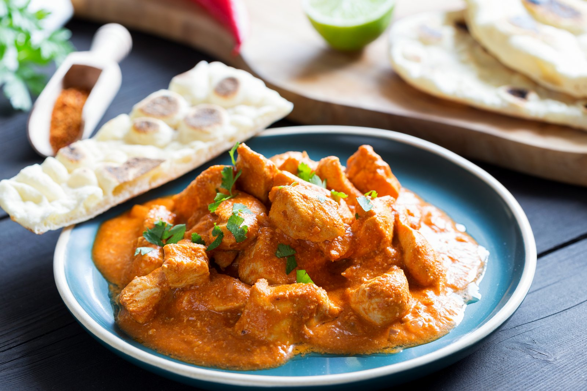

Butter Chicken

Description
Butter chicken, also known as Murgh Makhani, is a beloved North Indian dish that epitomizes the rich and flavorful essence of Indian cuisine. Succulent pieces of tender chicken are marinated in a harmonious blend of yogurt and spices, then cooked to perfection in a creamy tomato-based sauce enriched with butter and aromatic spices.
This indulgent curry boasts a perfect balance of tangy tomatoes, velvety creaminess, and a medley of warm spices, resulting in a luscious and satisfying dish that is both comforting and irresistibly delicious. Butter chicken is a culinary masterpiece that captures the essence of traditional Indian flavors, making it a favorite choice for those seeking a taste of authentic Indian gastronomy.
Ingredients
- 700g boneless, skinless chicken thighs, diced
- 1 cup plain yogurt
- 1 tbsp ginger-garlic paste
- 1 tsp turmeric powder
- 1 tsp chili powder
- 1 tsp ground cumin
- 1 tsp ground coriander
- 1 tsp garam masala
- Salt to taste
- 3 tbsp vegetable oil or ghee
- 1 large onion, finely chopped
- 1 cup tomato puree
- 1 cup heavy cream
- 2 tbsp butter
- Fresh cilantro, chopped (for garnish)
Instructions
Marinate the Chicken:
- In a bowl, combine the yogurt, ginger-garlic paste, turmeric powder, chili powder, cumin, corainder, garam masala, and salt. Mix well.
- Add the chicken pieces, ensuring they are well-coated with the marinade. Cover the bowl and let it marinate for at least 2 hours, or preferably overnight in the refrigerator.
Cook the Chicken:
- Heat 2 tbsp of oil in a large skillet or pan over medium heat.
- Add the marinated chicken and cook until it's browned on all sides and cooked through.
- Remove the chicken from the pan and set aside.
Prepare the Sauce:
- In the same pan, add another tbsp of oil.
- Add chopped onions and saute until they become translucent.
- Add the tomato puree to the onions and cook for a few minutes until the raw smell disappears.
- Stir in the cooked chicken, heavy cream, and butter. Simmer the mixture for about 10-15 minutes, allowing the flavours to meld and the sauce to thicken.
Serve
- Garnish the butter chicken with chopped cilantro. Servie it hot with naan, rice, or your favourite bread.